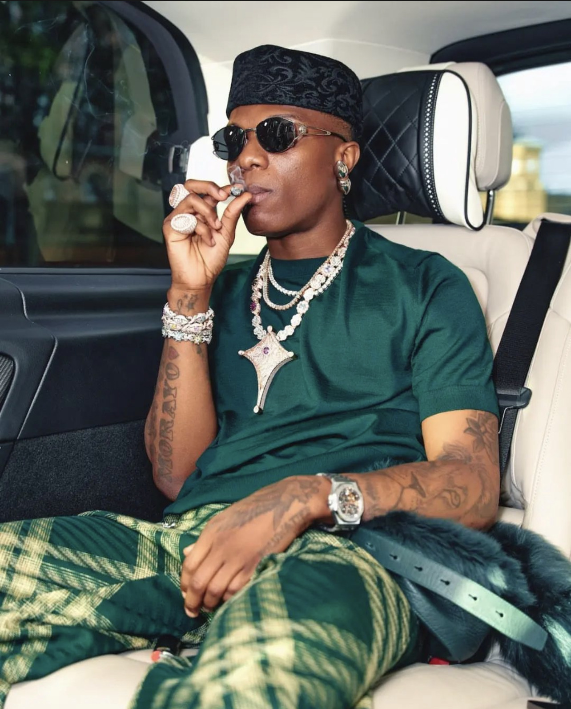
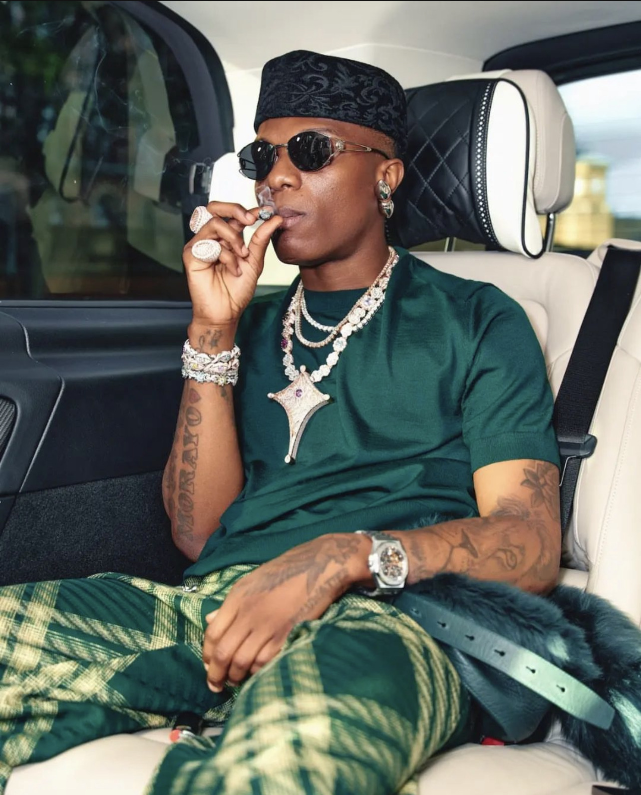
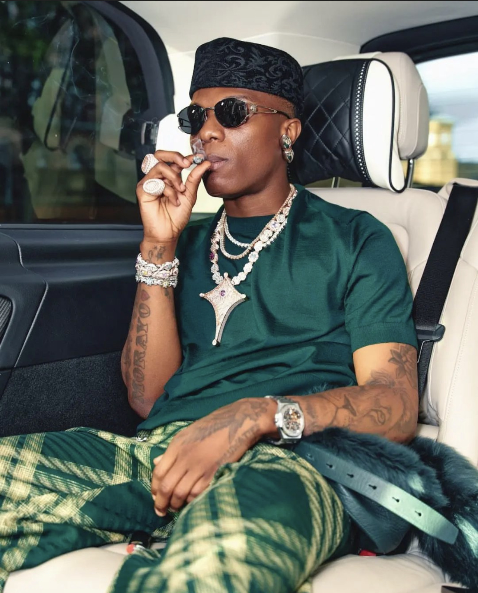
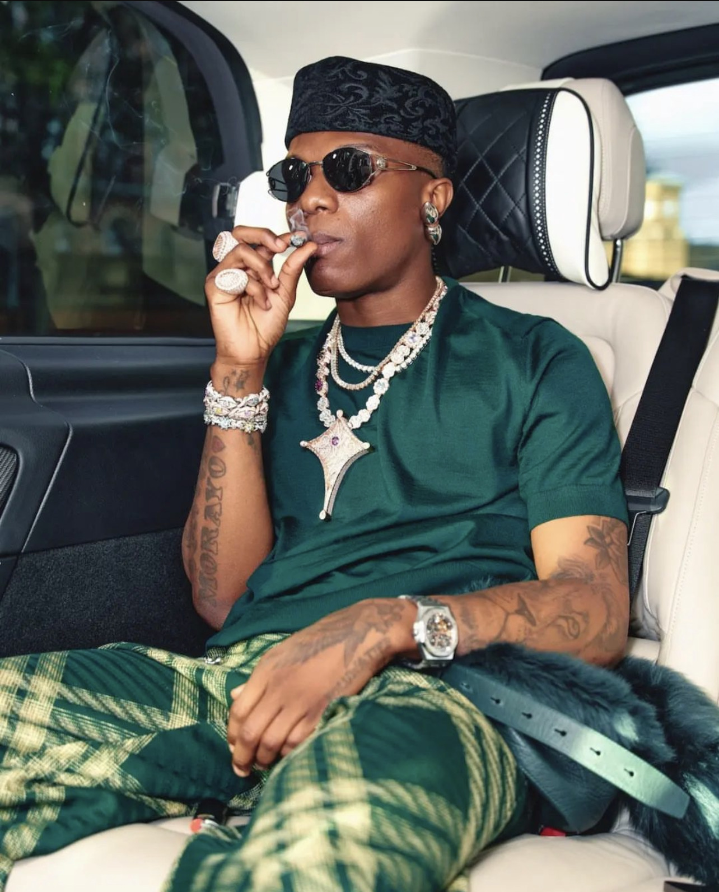

MEET THE BEST SELLING AFRICAN ARTIST
 


 

Wizkid won a Grammy for Best Music Video with Beyoncé for "Brown Skin Girl" in 2021. He also received nominations for Best Global Music Album and Best Global Music Performance in 2022
He has won multiple BET Awards, including Best International Act
Wizkid has won Best African Act and Best Worldwide Act
He made history by becoming the first African artist to win the Best International Act in 2017, among other wins
He has won awards including Top R&B Song for his collaboration on "One Dance" with Drake
Wizkid has received awards for his contributions to hits like "One Dance" and "Essence"
He is the most awarded artist at the Headies, with numerous wins including Artiste of the Year and Song of the Year
He has won awards for Best Collaboration and The Ashford & Simpson Songwriter's Award for "Brown Skin Girl"
He has won several awards here, including Artist of the Year
He won for Outstanding Duo, Group, or Collaboration for "Brown Skin Girl"
Wizkid has been recognized with awards for Best Male and Artist of the Year
Wizkid is a brand ambassador for several notable brands, including United Bank for Africa (UBA)
He was the first African artist to sell out the O2 Arena in London multiple times and has performed at prestigious events worldwide
Wizkid has used his platform to influence and support various causes, including education and health initiatives in Nigeria